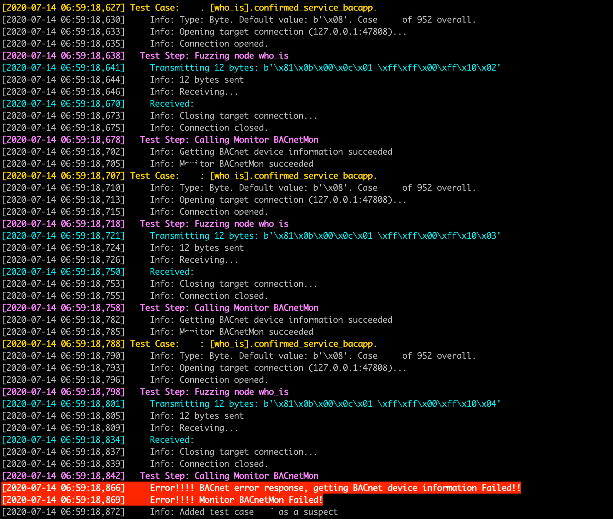
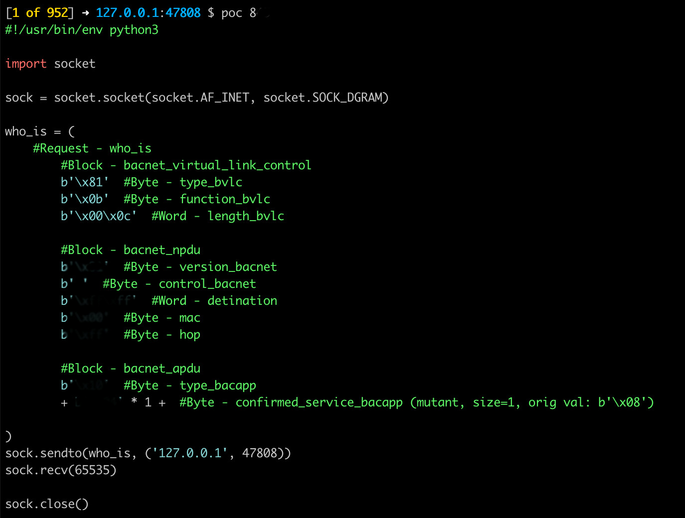
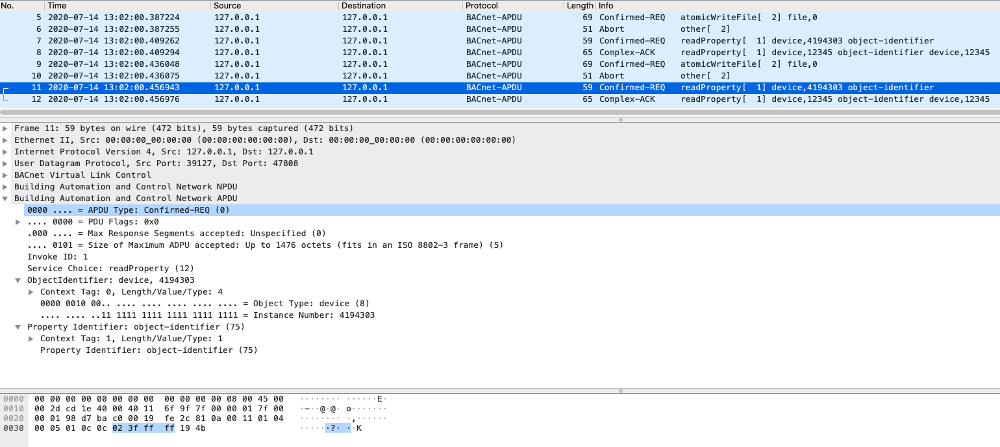
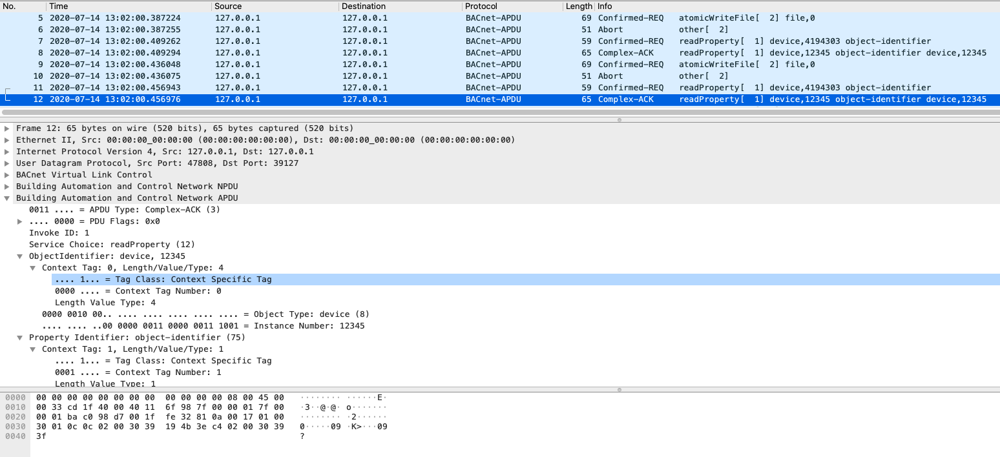

ICS stands for Industrial Control Systems, the term is very generic and is commonly used to describe control systems and their instrumentation, usually for controlling and monitoring industrial processes. ICS basically integrates hardware, software and their network connectivity for running and supporting critical infrastructure. ICS systems get data from remote sensors and send commands to the machinery for the appropriate actions to take.
In this post we are going to focus in BACnet and modbus protocols.
Typical ICS components
- Supervisory Control and Data Acquisition (SCADA)
- Industrial Automation and Control Systems (IACS)
- Human Machine Interface (HMI)
- Distributed Control Systems (DCS)
- Control Servers
- Programmable Automation Controllers (PAC)
- Programmable Logic Controllers (PLC)
- Intelligent Electronic Devices (IED)
- Sensors
- Remote Terminal Units (RTU)
Typical ICS protocols used
-
The Common Industrial Protocol (CIP) is a protocol created by the ODVA company for automating industrial processes. CIP comprises a set of services and messages for control, security, synchronization, configuration, information, and so forth which can be integrated into Ethernet networks and into the Internet.
-
Modbus is one of the oldest industrial control protocols. It was introduced in 1979 using serial communications to interact with PLCs. It is open-source and freely distributed and can be built by anyone into their equipment. Modbus work in the application layer, which permits different physical uses for transport layer. It provides communication in client-server mode among differing sorts of equipment connected through different technologies on lower layers, which include but not limited to, the TCP/IP protocol layer. Modbus has several security concerns: Lack of authentication, lack of encryption, lack of message checksum and lack of broadcast suppression.
-
DNP3 stands for Distributed Network Protocol. It was developed in 1993 and is widely used in the USA and Canada. It is only sparsely used in Europe, because there are alternatives such as IEC-60870-5-101 or IEC-60870-5-104. It operates at the application, data link and transport layers; thus, it is a three-layer protocol.
-
HART (Highway Addressable Remote Transducer) is a hybrid analog+digital industrial automation open protocol. HART is widely used in process and instrumentation systems ranging from small automation applications up to highly sophisticated industrial applications.
-
TASE (Telecontrol Application Service Element) 2.0 is also known as ICCP (Inter Control Center Protocol) or International Electrotechnical Commission (IEC) 60870-6, but they are more commonly referred to as ICCP. Since different vendors had their own custom and proprietary protocols, there was a need for a common protocol for communication and data exchange between different control centers. Keeping this in mind, ICCP/TASE 2.0 was designed. Unlike Modbus, which was designed for serial communication, ICCP has been designed specifically for communication over LAN (Local Area Network) and WAN (Wide Area Network). ICCP is used in communication between different control centers, power pools, sub-stations, other utilities and non-utility generators.
-
Profibus (PROcessFieldBUS acronym) is a standard for communication through Fieldbus promoted in 1989 by the German Department of Education and Researchand used by Siemens. It is based on serial communications by cable (RS-485, MBP) or optical fibercable. Has two variants, Profibus DP (for decentralized peripherals) and Profibus PA (for process automation).
-
Profinet is a standard based on Profibus that adopts Ethernet as its physical interface for connections rather than RS485. It offers the complete TCP/IP functionality for data transmission. Profinet is oriented toward reliability and real-time communications, together with usability.
-
BACnet was designed to allow communication of building automation and control systems for applications such as heating, ventilating, and air-conditioning control (HVAC), lighting control, access control, and fire detection systems and their associated equipment. The BACnet protocol provides mechanisms for computerized building automation devices to exchange information, regardless of the particular building service they perform.
-
OPC (OLE for process control) is not an industrial communications protocol, but rather an operational framework for communications in process control systems based on Windows that use object linking and embedding (OLE).
Standard Protocol Ports
| Protocol | Ports |
|---|---|
| BACnet/IP | UDP/47808 |
| DNP3 | TCP/20000, UDP/20000 |
| EtherCAT | UDP/34980 |
| Ethernet/IP | TCP/44818, UDP/2222, UDP/44818 |
| FL-net | UDP/55000 to 55003 |
| Foundation Fieldbus HSE | TCP/1089 to 1091, UDP/1089 to 1091 |
| ICCP | TCP/102 |
| Modbus TCP | TCP/502 |
| OPC UA Binary | Vendor Application Specific |
| OPC UA Discovery Server | TCP/4840 |
| OPC UA XML | TCP/80, TCP/443 |
| PROFINET | TCP/34962 to 34964, UDP/34962 to 34964 |
| ROC PLus | TCP/UDP 4000 |
Vendor Specific Ports
| Vendor | Product or Protocol | Ports |
|---|---|---|
| ABB | Ranger 2003 | TCP/10307, TCP/10311, TCP/10364 to 10365, TCP/10407, TCP/10409 to 10410, TCP/10412, TCP/10414 to 10415, TCP/10428, TCP/10431 to 10432, TCP/10447, TCP/10449 to 10450, TCP/12316, TCP/12645, TCP/12647 to 12648, TCP/13722, TCP/13724, TCP/13782 to 13783, TCP/38589, TCP/38593, TCP/38600, TCP/38971, TCP/39129, TCP/39278 |
| Emerson / Fisher | ROC Plus | TCP/UDP/4000 |
| Foxboro/Invensys | Foxboro DCS FoxApi | TCP/UDP/55555 |
| Foxboro/Invensys | Foxboro DCS AIMAPI | TCP/UDP/45678 |
| Foxboro/Invensys | Foxboro DCS Informix | TCP/UDP/1541 |
| Iconics | Genesis32 GenBroker (TCP) | TCP/18000 |
| Johnson Controls | Metasys N1 | TCP/UDP/11001 |
| Johnson Controls | Metasys BACNet | UDP/47808 |
| OSIsoft | PI Server | TCP/5450 |
| Siemens | Spectrum Power TG | TCP/50001 to 50016, TCP/50018 to 50020, UDP/50020 to 50021, TCP/50025 to 50028, TCP/50110 to 50111 |
| SNC | GENe | TCP/38000 to 38001, TCP/38011 to 38012, TCP/38014 to 38015, TCP/38200, TCP/38210, TCP/38301, TCP/38400, TCP/38700, TCP/62900, TCP/62911, TCP/62924, TCP/62930, TCP/62938, TCP/62956 to 62957, TCP/62963, TCP/62981 to 62982, TCP/62985, TCP/62992, TCP/63012, TCP/63027 to 63036, TCP/63041, TCP/63075, TCP/63079, TCP/63082, TCP/63088, TCP/63094, TCP/65443 |
| Telvent | OASyS DNA | UDP/5050 to 5051, TCP/5052, TCP/5065, TCP/12135 to 12137, TCP/56001 to 56099 |
Fuzzing BACnet
BACnet
BACnet was designed to allow communication of building automation and control systems for applications such as heating, ventilating, and air-conditioning control (HVAC), lighting control, access control, and fire detection systems and their associated equipment. The BACnet protocol provides mechanisms for computerized building automation devices to exchange information, regardless of the particular building service they perform.
BACnet is a communications protocol for Building Automation and Control (BAC) networks UDP based and contains 3 main headers the BVLC, NPDU and APDU.
A request to BACnet passes down through the lower layers of the protocol stack in the local device, this process can be observed in the next image Source.

The 3 headers can be examined in the BACnet Wiki

BVLC (BACNet virtual link control): 4 bytes
The firts byte defines the type, in this case bacnet/ip 0x81, the second one defines the function 0x0a, and the last 2 bytes defines the length of the whole packet BACnet Wiki:
- The firts byte defines the type: bacnet/ip 0x81
- The second byte defines the function 0x0a (ORIGINAL_UNICAST_NPDU = 10)
- The last 2 bytes defines the length of the whole packet

- NPDU Function:

As we can see in the BACnet packet the UDP Port number used by BACnet communications over IP is 47808:

NPDU (Network layer protocol data unit): 2 bytes
The NPDU consists of a NPCI followed by a NSDU. BACnet Wiki
According bacnetwiki this is the representation, but be careful here, in practice the headers is just 2 bytes, Version (Always 0x01) and NPCI Control Octet:

NPDU Layer:

APDU (Network layer protocol data unit): 2 bytes
BACnet APDUs carry the Application Layer parameters. The maximum size of an APDU is specified by a device’s Max_APDU_Length_Accepted, be careful with that, otherwise you will face malformed packet issues. BACnet APDU

In fuzzing we trust
First of all we need to understand and known how the protocol that we want to fuzz works. With this in mind in the next lines will be provided some examples on how to fuzz certain operations that are used in this case by BACnet. The examples provided below are written to be used with Fuzzowski a Network Protocol Fuzzer forked from BooFuzz (which is a fork of Sulley), so the next examples can be translated easily to boofuzz.
In BACnet the devices have a Device ID (Device Object Identifier) which is used in a BACnet network as the unique identifier of a specific device. The Device ID for each device must be unique on the entire BACnet network. Device Instance can be in the range of 0 to 4194304. So first of all we need to modify and set the BACnet Device ID in the BACnet fuzzer that we can found in the Fuzzowski repository
DeviceID = 12345 # BACnet Device ID
Also some Codes, Functions and Services or Types have been defined in the BACnet fuzzer to be used by the methods defined:
BVLC_Function_Code = [
'\x00', # BVLC Result
'\x01', # Write Broadcast Distribution Table
'\x02', # Read Broadcast Distribution Table
'\x03', # Read Broadcast Distribution Table ACK
'\x04', # Forwarded-NPDU
'\x05', # Register Foreign Device
'\x0a', # Original-Unicast-NPDU
'\x0b', # Original-Broadcast-NPDU
'\x0c' # Secure-BVLL
]
Confirmed_Service_Choices = [
'\x05', # Subscribe COV
'\x0c', # Read Property
'\x0e', # Read Property Multiple
'\x0f', # Write Property
'\x10', # Write Property Multiple
'\x11', # Device Communication Control
'\x14' # Reinitialize Device
]
Network_Layer_Message_Type = [
'\x00', # Who-Is-Router-To-Network
'\x01', # I-Am-Router-To-Network
'\x02', # I-Could-Be-Router-To-Network
'\x03', # Reject-Message-To-Network
'\x04', # Router-Busy-To-Network
'\x05', # Router-Available-To-Network
'\x06', # Initialize-Routing-Table
'\x07', # Initialize-Routing-Table-ACK
'\x08', # Establish-Connection-To-Network
'\x09', # Disconnect-Connection-To-Network
'\x0a', # Challenge-Request
'\x0b', # Security-Payload
'\x0c', # Security-Response
'\x0d', # Request-Key-Update
'\x0e', # Update-Key-Set
'\x0f', # Update-Distribution-Key
'\x10', # Request-Master-Key
'\x11' # Set-Master-Key
# 0x12 to 0x7F Reserved for use by ASHRAE
# 0x80 to 0xFF Available for Vendor Proprietary Messages
]
Here we can found the class where was defined the fuzzer and the methods that define all the operations that could be used to fuzz a BACnet device or server. In the example has been defined methods to fuzz DeviceCommunicationControl, who_is, i_Am, Initialize_Routing_Table, Who_Is_Router_To_Network, readProperty, atomicReadFile and atomicWriteFile. More can be defined, just adding the definition of the packet or operation.
class BACnet(IFuzzer):
"""
BACnet Fuzzing Module example
virtualenv venv -p python3
source venv/bin/activate
pip install -r requirements.txt
python -m fuzzowski 127.0.0.1 47808 -p udp -f bacnet -rt 0.5 -m BACnetMon
python -m fuzzowski 127.0.0.1 47808 -p udp -f bacnet -rt 0.5 -r who_is -m BACnetMon
python -m fuzzowski 127.0.0.1 47808 -p udp -f bacnet -rt 0.5 -r DeviceCommunicationControl -m BACnetMon
"""
name = 'bacnet'
@staticmethod
def get_requests() -> List[callable]:
return [BACnet.DeviceCommunicationControl, BACnet.who_is, BACnet.i_Am, BACnet.Initialize_Routing_Table, BACnet.Who_Is_Router_To_Network, BACnet.readProperty, BACnet.atomicReadFile, BACnet.atomicWriteFile]
@staticmethod
def define_nodes(*args, **kwargs) -> None:
# ---------------- DeviceCommunicationControl ------------------- #
# Used in CVE-2019-12480
# Start DeviceCommunicationControl bacnet request packet
s_initialize("DeviceCommunicationControl")
with s_block("bacnet_virtual_link_control"):
s_byte(0x81, name='type_bvlc', fuzzable=False)
s_byte(0x0a, name='function_bvlc', fuzzable=False)
s_word(0x0017, name='length_bvlc', endian='>', fuzzable=True)
with s_block("bacnet_npdu"):
s_byte(0x01, name='version_bacnet', fuzzable=False)
s_byte(0x04, name='control_bacnet', fuzzable=False)
with s_block("bacnet_apdu"):
s_byte(0x02, name='type_bacapp', fuzzable=True)
s_byte(0x44, name='max_adpu_size_bacapp', fuzzable=True)
s_byte(0x08, name='invoke_id_bacapp', fuzzable=True)
s_byte(0x11, name='confirmed_service_bacapp', fuzzable=True)
s_byte(0x0d, name='context_tag', fuzzable=True)
s_byte(0xff, name='tag_class', fuzzable=True)
s_byte(0x80, name='tag_number', fuzzable=True)
s_word(0x0000, name='enable', endian='>', fuzzable=True)
s_word(0x0000, name='passwd_length', endian='>', fuzzable=True)
s_byte(0x00, name='lvt', fuzzable=True)
s_dword(0x0a1a0300, name='lenght_value_type', endian='>', fuzzable=True)
s_word(0x1900, name='enable-disable', endian='>', fuzzable=True)
s_byte(0x2a, name='lvt_passwd', fuzzable=True)
s_byte(0x00, name='string_char_set', fuzzable=True)
s_string('A', name='passwd', fuzzable=True)
# end bacnet DeviceCommunicationControl
# ---------------- DeviceCommunicationControl ------------------- #
# ------------------------- Who-Is ------------------------------ #
# Start Who-Is bacnet request packet
s_initialize("who_is")
with s_block("bacnet_virtual_link_control"):
s_byte(0x81, name='type_bvlc', fuzzable=False)
s_byte(0x0b, name='function_bvlc', fuzzable=False)
s_word(0x000c, name='length_bvlc', endian='>', fuzzable=True)
with s_block("bacnet_npdu"):
s_byte(0x01, name='version_bacnet', fuzzable=True)
s_byte(0x20, name='control_bacnet', fuzzable=True)
s_word(0xffff, name='detination', endian='>', fuzzable=True)
s_byte(0x00, name='mac', fuzzable=True)
s_byte(0xff, name='hop', fuzzable=True)
with s_block("bacnet_apdu"):
s_byte(0x10, name='type_bacapp', fuzzable=True)
s_byte(0x08, name='confirmed_service_bacapp', fuzzable=True)
# end
# ------------------------- Who-Is ------------------------------ #
# ------------------- Initialize_Routing_Table ------------------ #
# Start Initialize_Routing_Table bacnet request packet
s_initialize("Initialize_Routing_Table")
with s_block("bacnet_virtual_link_control"):
s_byte(0x81, name='type_bvlc', fuzzable=False)
s_byte(0x0b, name='function_bvlc', fuzzable=False)
s_word(0x0008, name='length_bvlc', endian='>', fuzzable=True)
with s_block("bacnet_npdu"):
s_byte(0x01, name='version_bacnet', fuzzable=True)
s_byte(0x80, name='control_bacnet', fuzzable=True)
s_byte(0x06, name='message_type', fuzzable=True)
s_byte(0x00, name='rpot_number', fuzzable=True)
# end
# ------------------- Initialize_Routing_Table ------------------ #
# ------------------ Who_Is_Router_To_Network ------------------- #
# Start Who_Is_Router_To_Network bacnet request packet
s_initialize("Who_Is_Router_To_Network")
with s_block("bacnet_virtual_link_control"):
s_byte(0x81, name='type_bvlc', fuzzable=False)
s_byte(0x0b, name='function_bvlc', fuzzable=False)
s_word(0x0007, name='length_bvlc', endian='>', fuzzable=True)
with s_block("bacnet_npdu"):
s_byte(0x01, name='version_bacnet', fuzzable=True)
s_byte(0x80, name='control_bacnet', fuzzable=True)
s_byte(0x00, name='message_type', fuzzable=True)
# end
# ------------------ Who_Is_Router_To_Network ------------------- #
# ---------------------------- i-Am ----------------------------- #
# Start i-Am bacnet request packet
s_initialize("i_Am")
with s_block("bacnet_virtual_link_control"):
s_byte(0x81, name='type_bvlc', fuzzable=False)
s_byte(0x0b, name='function_bvlc', fuzzable=False)
s_word(0x0018, name='length_bvlc', endian='>', fuzzable=True)
with s_block("bacnet_npdu"):
s_byte(0x01, name='version_bacnet', fuzzable=True)
s_byte(0x20, name='control_bacnet', fuzzable=True)
s_word(0xffff, name='destination', endian='>', fuzzable=True)
s_byte(0x00, name='destination_mac', fuzzable=True)
s_byte(0xff, name='hop_count', fuzzable=True)
with s_block("bacnet_apdu"):
s_byte(0x10, name='type_bacapp', fuzzable=True)
s_byte(0x00, name='confirmed_service_bacapp', fuzzable=True)
# deviceID
s_byte(0xc4, name='ObjectIdentifier_device', fuzzable=True)
s_byte(0x02, name='ObjectIdentifier_instance_number', fuzzable=True)
s_byte(DeviceID_byte1, name='ObjectIdentifier_deviceID_byte1', fuzzable=True)
s_byte(DeviceID_byte2, name='ObjectIdentifier_deviceID_byte2', fuzzable=True)
s_byte(DeviceID_byte3, name='ObjectIdentifier_deviceID_byte3', fuzzable=True)
# deviceID
s_byte(0x22, name='lvt', fuzzable=True)
s_word(0x0400, name='max_adpu_size_bacapp', endian='>', fuzzable=True)
s_word(0x9100, name='segmented_both', endian='>', fuzzable=True)
s_word(0x2105, name='vendor_id', endian='>', fuzzable=True)
# end
# ---------------------------- i-Am ----------------------------- #
# ------------------------- readProperty ------------------------ #
# Start readProperty bacnet request packet
s_initialize("readProperty")
with s_block("bacnet_virtual_link_control"):
s_byte(0x81, name='type_bvlc', fuzzable=False)
s_byte(0x0b, name='function_bvlc', fuzzable=False)
s_word(0x0011, name='length_bvlc', endian='>', fuzzable=True)
with s_block("bacnet_npdu"):
s_byte(0x01, name='version', fuzzable=False)
s_byte(0x04, name='control', fuzzable=False)
with s_block("bacnet_apdu"):
s_byte(0x02, name='type_bacapp', fuzzable=False)
s_byte(0x44, name='max_adpu_size_bacapp', fuzzable=True)
s_byte(0x03, name='invoke_id_bacapp', fuzzable=True)
s_byte(0x0c, name='confirmed_service_bacapp', fuzzable=True)
# deviceID
s_byte(0x0c, name='ObjectIdentifier_deviceID', fuzzable=True)
s_byte(0x02, name='ObjectIdentifier_instance_number', fuzzable=True)
s_byte(DeviceID_byte1, name='ObjectIdentifier_deviceID_byte1', fuzzable=True)
s_byte(DeviceID_byte2, name='ObjectIdentifier_deviceID_byte2', fuzzable=True)
s_byte(DeviceID_byte3, name='ObjectIdentifier_deviceID_byte3', fuzzable=True)
s_word(0x194b, name='property_identifier_bacapp', endian='>', fuzzable=True)
# end
# ------------------------- readProperty ------------------------ #
# ------------------------- atomicReadFile ----------------------- #
# Start atomicReadFile bacnet request packet
s_initialize("atomicReadFile")
with s_block("bacnet_virtual_link_control"):
s_byte(0x81, name='type_bvlc', fuzzable=False)
s_byte(0x0a, name='function_bvlc', fuzzable=False)
s_word(0x001b, name='length_bvlc', endian='>', fuzzable=True)
with s_block("bacnet_npdu"):
s_byte(0x01, name='version', fuzzable=False)
s_byte(0x04, name='control', fuzzable=False)
with s_block("bacnet_apdu"):
s_byte(0x00, name='type_bacapp', fuzzable=False)
s_byte(0x05, name='max_adpu_size_bacapp', fuzzable=True)
s_byte(0x01, name='invoke_id_bacapp', fuzzable=True)
s_byte(0x06, name='confirmed_service_bacapp', fuzzable=True)
# file
s_dword(0xc4028000, name='file', endian='>', fuzzable=True)
s_byte(0x00, name='ObjectIdentifier', fuzzable=True)
# stream
s_word(0x0e35, name='named_tag', endian='>', fuzzable=True)
s_dword(0xffdf62ee, name='lvt', endian='>', fuzzable=True)
s_byte(0x00, name='ObjectIdentifier_2', fuzzable=True)
s_dword(0x00220584, name='text', endian='>', fuzzable=True)
s_byte(0x0f, name='named_tag_2', fuzzable=True)
# end
# ------------------------- atomicReadFile ----------------------- #
# ------------------------- atomicWriteFile ---------------------- #
# Start atomicWriteFile bacnet request packet
s_initialize("atomicWriteFile")
with s_block("bacnet_virtual_link_control"):
s_byte(0x81, name='type_bvlc', fuzzable=False)
s_byte(0x0a, name='function_bvlc', fuzzable=False)
s_word(0x001b, name='length_bvlc', endian='>', fuzzable=True)
with s_block("bacnet_npdu"):
s_byte(0x01, name='version', fuzzable=False)
s_byte(0x04, name='control', fuzzable=False)
with s_block("bacnet_apdu"):
s_byte(0x00, name='type_bacapp', fuzzable=False)
s_byte(0x05, name='max_adpu_size_bacapp', fuzzable=True)
s_byte(0x02, name='invoke_id_bacapp', fuzzable=True)
s_byte(0x07, name='confirmed_service_bacapp', fuzzable=True)
# file
s_dword(0xc4028000, name='file', endian='>', fuzzable=True)
s_byte(0x00, name='ObjectIdentifier', fuzzable=True)
# stream
s_word(0x0e35, name='named_tag', endian='>', fuzzable=True)
s_dword(0xff5ed5c0, name='lvt', endian='>', fuzzable=True)
s_byte(0x85, name='ObjectIdentifier_2', fuzzable=True)
s_dword(0x0a62640a, name='text', endian='>', fuzzable=True)
s_byte(0x0f, name='named_tag_2', fuzzable=True)
# end
# ------------------------- atomicWriteFile ---------------------- #
So we can start launching the fuzzer: python -m fuzzowski 127.0.0.1 47808 -p udp -f bacnet -rt 0.5 -m BACnetMon
While Fuzzing we can found errors like observed in the image below that could bring to us some information of the issue like a segmentation fault or error in the server that could help in a further attack. In the next image can be observed that the monitor defined for this fuzzer has been detected no response from the server and launched a fail message:

If an error is detected, fuzzowski offers a cool functionallity that help us to generates a proof of concept of any fault identified.

BACnet Monitor
Fuzzing is not the magic thing that provide us a way to found vulnerabilities, one of the most important things apart from define the fuzzer is to develop the monitor, and implement how we want to identify faults in the fuzzed system. In this case we have defined a monitor for the BACnet fuzzer that sends a query for Property Identifier ID to the target in order to get the BACnet device information and check the response. In our case if the BACnet device does not respond to this query a fault is generated or identified, and indeed all the faults are needed to be double checked to verify if exists or not an issue, crash or other type of output that could us help in a further attack.
class BACnetMonitor(IMonitor):
"""
BACnet Monitor Module interface
@Author: https://github.com/1modm
Based on https://svn.nmap.org/nmap/scripts/bacnet-info.nse
"""
get_bacnet_property_identifier_id = (b"\x81" # Type: BACnet/IP (Annex J)
b"\x0a" # Function: Original-Unicast-NPDU
b"\x00\x11" # BVLC-Length: 4 of 17 bytes
# BACnet NPDU
b"\x01" # Version: 0x01 (ASHRAE 135-1995)
b"\x04" # Control (expecting reply)
# BACnet APDU
b"\x00" # APDU Type: Confirmed-REQ, PDU flags: 0x0
b"\x05" # Max response segments unspecified, Max APDU size: 1476 octets
b"\x01" # Invoke ID: 1
b"\x0c" # Service Choice: readProperty
b"\x0c" # Context-specific tag, number 0, Length Value Type 4
b"\x02\x3f\xff\xff" # Object Type: device; instance number 4194303
b"\x19\x4b" # Context-specific tag, number 1, Length Value Type 1
# TODO, send DeviceID
)
@staticmethod
def name() -> str:
return "BACnetMon"
@staticmethod
def help():
return "Sends a query for Property Identifier id to the target in order to get the BACnet device information and check the response"
def test(self):
conn = self.get_connection_copy()
result = self._get_bacnet_info(conn)
return result
def _get_bacnet_info(self, conn: ITargetConnection):
try:
conn.open()
conn.send(self.get_bacnet_property_identifier_id)
data = conn.recv_all(10000)
if len(data) == 0:
self.logger.log_error("BACnet error response, getting BACnet device information Failed!!")
result = False
else:
# validate valid BACNet Packet and verify that the response APDU was not an error packet
if hex(data[0]) == '0x81' and hex(data[1]) == '0xa' and hex(data[6]) != '0x50':
self.logger.log_info(f"Getting BACnet device information succeeded")
else:
self.logger.log_warn(f"Getting BACnet error response in the APDU")
result = True
except Exception as e:
self.logger.log_error(f"BACnet error response, getting BACnet device information Failed!! Exception while receiving: {type(e).__name__}. {str(e)}")
result = False
finally:
conn.close()
return result
In the next image can be found the request sent to check if the BACnet device is still working:

And the response in which can be observed that the device send the Instance Number (12345) of our target server tested:

Fuzzing Modbus
In the same way than our previous protocol fuzzer, a modbus fuzzer has been uploaded as an example. And the way we could launch the fuzzer using the monitor implemented could be: python -m fuzzowski 127.0.0.1 502 -p tcp -f modbus -rt 1 -m modbusMon
The modbus class has the next methods implemented that could be used to fuzz any modbus/TCP server; read_coil, read_input, read_holding, read_discrete, single_coil, single_register, multiple_coil, multiple_register
class MODBUS(IFuzzer):
"""
MODBUS Fuzzing Module
Use at your own risk, and please do not use in a production environment
@Author: https://github.com/1modm
Based on https://github.com/youngcraft/boofuzz-modbus
and https://github.com/riptideio/pymodbus
virtualenv venv -p python3
source venv/bin/activate
pip install -r requirements.txt
python -m fuzzowski 127.0.0.1 502 -p tcp -f modbus -rt 0.5 -r read_coil
python -m fuzzowski 127.0.0.1 502 -p tcp -f modbus
python -m fuzzowski 127.0.0.1 502 -p tcp -f modbus -rt 1 -m modbusMon
"""
# --------------------------------------------------------------- #
name = 'modbus'
@staticmethod
def get_requests() -> List[callable]:
return [MODBUS.read_coil, MODBUS.read_input, MODBUS.read_holding, MODBUS.read_discrete, MODBUS.single_coil, MODBUS.single_register, MODBUS.multiple_coil, MODBUS.multiple_register, MODBUS.other_operations]
# --------------------------------------------------------------- #
@staticmethod
def define_nodes(*args, **kwargs) -> None:
# ------------------ Read Coil Status (FC=01) ------------------- #
s_initialize("modbus_read_coil")
with s_block("modbus_head"):
s_word(0x0001,name='transId',fuzzable=True)
s_word(0x0000,name='protoId',fuzzable=False)
s_word(0x06,name='length')
s_byte(0xff,name='unit Identifier',fuzzable=False)
with s_block('pdu'):
s_byte(0x01,name='funcCode read coil memory',fuzzable=False)
s_word(0x0000,name='start address')
s_word(0x0000,name='quantity')
s_initialize('read_holding_registers')
with s_block("modbus_head"):
s_word(0x0001,name='transId',fuzzable=True)
s_word(0x0002,name='protoId',fuzzable=False)
s_word(0x06,name='length')
s_byte(0xff,name='unit Identifier',fuzzable=False)
with s_block('read_holding_registers_block'):
s_byte(0x01,name='read_holding_registers')
s_word(0x0000,name='start address')
s_word(0x0000,name='quantity')
# --------------------------------------------------------------- #
# ------------------ Read Input Status (FC=02) ------------------ #
s_initialize('ReadDiscreteInputs')
with s_block("modbus_head"):
s_word(0x0001,name='transId',fuzzable=True)
s_word(0x0002,name='protoId',fuzzable=False)
s_word(0x06,name='length')
s_byte(0xff,name='unit Identifier',fuzzable=False)
with s_block('ReadDiscreteInputsRequest'):
s_byte(0x02,name='funcCode',fuzzable=False)
s_word(0x0000,name='start_address')
s_word(0x0000,name='quantity')
# --------------------------------------------------------------- #
# ---------------- Read Holding Registers (FC=03) --------------- #
s_initialize('ReadHoldingRegisters')
with s_block("modbus_head"):
s_word(0x0001,name='transId',fuzzable=True)
s_word(0x0002,name='protoId',fuzzable=False)
s_word(0x06,name='length')
s_byte(0xff,name='unit Identifier',fuzzable=False)
with s_block('ReadHoldingRegistersRequest'):
s_byte(0x03,name='funcCode',fuzzable=False)
s_word(0x0000,name='start_address')
s_word(0x0000,name='quantity')
# --------------------------------------------------------------- #
# ---------------- Read Input Registers (FC=04) ----------------- #
s_initialize('ReadInputRegisters')
with s_block("modbus_head"):
s_word(0x0001,name='transId',fuzzable=True)
s_word(0x0002,name='protoId',fuzzable=False)
s_word(0x06,name='length')
s_byte(0xff,name='unit Identifier',fuzzable=False)
with s_block('ReadInputRegistersRequest'):
s_byte(0x04,name='funcCode',fuzzable=False)
s_word(0x0000,name='start_address')
s_word(0x0000,name='quantity')
# --------------------------------------------------------------- #
# ------------------ Force Single Coil (FC=05) ------------------ #
s_initialize('WriteSingleCoil')
with s_block("modbus_head"):
s_word(0x0001,name='transId',fuzzable=True)
s_word(0x0002,name='protoId',fuzzable=False)
s_word(0x06,name='length')
s_byte(0xff,name='unit Identifier',fuzzable=False)
with s_block('WriteSingleCoilRequest'):
s_byte(0x05,name='funcCode',fuzzable=False)
s_word(0x0000,name='start_address')
s_word(0x0000,name='quantity')
# --------------------------------------------------------------- #
# ---------------- Preset Single Register (FC=06) --------------- #
s_initialize('WriteSingleRegister')
with s_block("modbus_head"):
s_word(0x0001,name='transId',fuzzable=True)
s_word(0x0002,name='protoId',fuzzable=False)
s_word(0x06,name='length')
s_byte(0xff,name='unit Identifier',fuzzable=False)
with s_block('WriteSingleRegisterRequest'):
s_byte(0x06,name='funcCode',fuzzable=False)
s_word(0x0000,name='output_address')
s_word(0x0000,name='output_value')
# --------------------------------------------------------------- #
# ---------------- Force Multiple Coils (FC=15) ----------------- #
s_initialize('WriteMultipleCoils')
with s_block("modbus_head"):
s_word(0x0001,name='transId',fuzzable=True)
s_word(0x0002,name='protoId',fuzzable=False)
s_word(0x06,name='length')
s_byte(0xff,name='unit Identifier',fuzzable=False)
with s_block('WriteMultipleCoilsRequest'):
s_byte(0x0f,name='func_code',fuzzable=False)
s_word(0x0000,name='starting_address')
s_dword(0x0000,name='byte_count')
s_size("outputsValue", length=8)
with s_block("outputs"):
s_word(0x00,name='outputsValue')
# --------------------------------------------------------------- #
# --------------- Preset Multiple Registers (FC=16) ------------- #
s_initialize('WriteMultipleRegisters')
with s_block("modbus_head"):
s_word(0x0001,name='transId',fuzzable=True)
s_word(0x0002,name='protoId',fuzzable=False)
s_word(0x06,name='length')
s_byte(0xff,name='unit Identifier',fuzzable=False)
with s_block('WriteMultipleRegistersRequest'):
s_byte(0x10,name='func_code',fuzzable=False)
s_word(0x0000,name='starting_address')
s_dword(0x0000,name='byte_count')
s_size("outputsValue",length=16)
s_size("outputsValue2", length=8)
with s_block("outputs"):
s_dword(0x0000,name='outputsValue3')
# --------------------------------------------------------------- #
# ---------------------------- Other ---------------------------- #
s_initialize('ReadExceptionStatus')
with s_block("modbus_head"):
s_word(0x0001,name='transId',fuzzable=True)
s_word(0x0002,name='protoId',fuzzable=False)
s_word(0x06,name='length')
s_byte(0xff,name='unit Identifier',fuzzable=False)
with s_block('ReadExceptionStatusRequest'):
s_byte(0x07,name='funcCode',fuzzable=False)
s_initialize('ReadExceptionStatusError')
with s_block("modbus_head"):
s_word(0x0001,name='transId',fuzzable=True)
s_word(0x0002,name='protoId',fuzzable=False)
s_word(0x06,name='length')
s_byte(0xff,name='unit Identifier',fuzzable=False)
with s_block('ReadExceptionStatusErrorRequest'):
s_byte(0x87,name='funcCode',fuzzable=False)
s_initialize('ReportSlaveId')
with s_block("modbus_head"):
s_word(0x0001,name='transId',fuzzable=True)
s_word(0x0002,name='protoId',fuzzable=False)
s_word(0x06,name='length')
s_byte(0xff,name='unit Identifier',fuzzable=False)
with s_block('ReportSlaveIdRequest'):
s_byte(0x11,name='func_code',fuzzable=False)
s_initialize('ReadFileSub')
with s_block("modbus_head"):
s_word(0x0001,name='transId',fuzzable=True)
s_word(0x0002,name='protoId',fuzzable=False)
s_word(0x06,name='length')
s_byte(0xff,name='unit Identifier',fuzzable=False)
with s_block('ReadFileSubRequest'):
s_byte(0x06,name='refType',fuzzable=False)
s_word(0x0001,name='fileNumber')
s_word(0x0000,name='recordNumber')
s_word(0x0000,name='recordLength')
s_initialize('ReadFileRecord')
with s_block("modbus_head"):
s_word(0x0001,name='transId',fuzzable=True)
s_word(0x0002,name='protoId',fuzzable=False)
s_word(0x06,name='length')
s_byte(0xff,name='unit Identifier',fuzzable=False)
with s_block('ReadFileRecordRequest'):
s_byte(0x14,name='funcCode',fuzzable=False)
s_byte(0x0001,name='byteCount')
s_initialize('WriteFileSub')
with s_block("modbus_head"):
s_word(0x0001,name='transId',fuzzable=True)
s_word(0x0002,name='protoId',fuzzable=False)
s_word(0x06,name='length')
s_byte(0xff,name='unit Identifier',fuzzable=False)
with s_block('WriteFileSubRequest'):
s_byte(0x06,name='refType',fuzzable=False)
s_word(0x0001,name='fileNumber')
s_word(0x0000,name='recordNumber')
# ---------------------------------
# s_size is record
s_size('recordData',length=16,name='recordLength')
with s_block("recordData"):
s_word(0x0000,name='recordData_value')
s_word(0x0000,name='recordLength_value')
s_initialize('WriteFileRecord')
with s_block("modbus_head"):
s_word(0x0001,name='transId',fuzzable=True)
s_word(0x0002,name='protoId',fuzzable=False)
s_word(0x06,name='length')
s_byte(0xff,name='unit Identifier',fuzzable=False)
with s_block('WriteFileRecordRequest'):
s_byte(0x15,name='funcCode',fuzzable=False)
s_byte(0x00,name='datalength')
s_initialize('MaskWriteRegister')
with s_block("modbus_head"):
s_word(0x0001,name='transId',fuzzable=True)
s_word(0x0002,name='protoId',fuzzable=False)
s_word(0x06,name='length')
s_byte(0xff,name='unit Identifier',fuzzable=False)
with s_block('MaskWriteRegisterRequest'):
s_byte(0x96,name='funcCode',fuzzable=False)
s_word(0x0000,name='refAddr')
s_word(0xffff,name='andMask')
s_word(0x0000,name='orMask')
s_initialize('ReadWriteMultipleRegisters')
with s_block("modbus_head"):
s_word(0x0001,name='transId',fuzzable=True)
s_word(0x0002,name='protoId',fuzzable=False)
s_word(0x06,name='length')
s_byte(0xff,name='unit Identifier',fuzzable=False)
with s_block('ReadWriteMultipleRegistersRequest'):
s_byte(0x17,name='funcCode',fuzzable=False)
s_word(0x0000,name='readStartingAddr')
s_word(0x0001,name='readQuantityRegisters')
s_word(0x0000,name='writeStartingAddr')
s_size('writeQuantityRegisters',length=16,endian='>',name="writeQuantityRegisters")
s_size('writeQuantityRegisters', length=8, endian='>',name="byteCount",math=lambda x:2*x)
with s_block('writeQuantityRegisters_block'):
s_size('modbus_head',length=2)
The monitor piece define a way to send a query for MODBUS device id to the target and check the response.
# --------------------------------------------------------------- #
SlaveID = 1 # Modbus TCP Unit Identifier: 1..247
# --------------------------------------------------------------- #
# ----------------- Device ID to bytes -------------------------- #
def bitDeviceID(DeviceID):
bytes_id = (DeviceID).to_bytes((DeviceID.bit_length() + 7) // 8, byteorder='big')
return bytes_id
HexSlaveID = bitDeviceID(SlaveID)
class modbusMonitor(IMonitor):
"""
MODBUS Monitor Module interface
@Author: https://github.com/1modm
"""
# Based on https://svn.nmap.org/nmap/scripts/modbus-discover.nse
# Send Read Device Identification
get_modbus_device_id_nse = (b"\x00\x00" # Modbus TCP Transaction Identifier
b"\x00\x00" # Modbus TCP Protocol Identifier
b"\x00\x05" # Modbus TCP Length
# Modbus TCP Unit Identifier
+ HexSlaveID +
# Discover device ID
b"\x2b" # Modbus Function Code: Encapsulated Interface Transport
b"\x0e" # Modbus MEI type: Read Device Identification
b"\x01" # Modbus Read Device ID: Basic Device Identification
b"\x00" # Modbus Object ID: VendorName
)
# Send Report Slave ID request
get_modbus_slave_id = (b"\x00\x00" # Modbus TCP Transaction Identifier
b"\x00\x00" # Modbus TCP Protocol Identifier
b"\x00\x02" # Modbus TCP Length
# Modbus TCP Unit Identifier
+ HexSlaveID +
b"\x11" # Report Slave ID
#b"\x04", # Send read input register instead previous?
)
@staticmethod
def name() -> str:
return "modbusMon"
@staticmethod
def help():
return "Sends a query for MODBUS device id to the target and check the response"
def test(self):
conn = self.get_connection_copy()
result = self._get_modbus_info(conn)
return result
def _get_modbus_info(self, conn: ITargetConnection):
try:
conn.open()
conn.send(self.get_modbus_device_id_nse) # or get_modbus_slave_id
data = conn.recv_all(10000)
if len(data) == 0:
self.logger.log_error("MODBUS error response, getting MODBUS device information Failed!!")
result = False
else:
Unit_ID = data[6].to_bytes((data[6].bit_length() + 7) // 8, byteorder='big')
Func_code = data[7]
Exception_code = data[8]
if data[5] > 0 and Unit_ID == HexSlaveID:
if hex(Func_code) == '0x11':
self.logger.log_info(f"Getting MODBUS device information succeeded")
elif hex(Exception_code) == '0xb': # more details needed? and (hex(Func_code) == '0x91' or hex(Func_code) == '0x84')
self.logger.log_warn(f"Getting MODBUS device information: Gateway target device failed to respond")
elif hex(Exception_code) == '0x1':
self.logger.log_warn(f"Getting MODBUS device information: Illegal function")
else:
self.logger.log_warn(f"Getting MODBUS device information warning")
else:
self.logger.log_warn(f"Getting MODBUS data error")
result = True
except Exception as e:
self.logger.log_error(f"MODBUS response error, getting MODBUS device information Failed!! Exception while receiving: {type(e).__name__}. {str(e)}")
result = False
finally:
conn.close()
return result